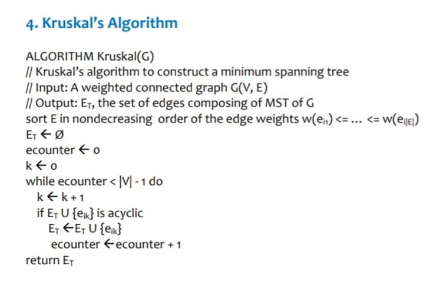

Course
Introduction

ABOUT THE COURSE
The Design Analysis and Algorithms course focuses on applying fundamental mathematical concepts such as set theory, logic, functions, and relations, along with discrete mathematical structures like graphs, trees, and counting principles. Key topics include the use of summations, series, and recurrence relations to analyze algorithmic efficiency.
The course emphasizes the integration of programming concepts, appropriate data structures, and programming paradigms to solve complex problems. Students will identify relevant knowledge applicable to given problems, explore various design alternatives, and develop optimized design solutions.
DATA STRUCTURES AND ALGORITHMS STUDIED
Data Structures: Arrays, Linked List, Recursion, Binary Search Tree (BST), AVL Trees, 2-3 Trees, Heap, Red-Black Trees, Tries, Skip List, Segment Trees, Sparse Table, Fenwick Tree.
Graph Algorithms: Depth First Search (DFS), Breadth First Search (BFS).
Sorting Algorithms: Bubble Sort, Selection Sort, Insertion Sort, Merge Sort, Quick Sort, Heap Sort.
String Matching Algorithms: Rabin-Karp Algorithm, Boyer-Moore Algorithm, Knuth-Morris-Pratt (KMP) Algorithm.
Greedy Algorithms: Dijkstra's Algorithm, Kruskal's Algorithm, Prim's Algorithm.
Dynamic Programming Algorithms: Floyd-Warshall Algorithm, Bellman-Ford Algorithm.
Other Problems: Traveling Salesman Problem, Huffman Algorithm, Knapsack Problem.
TEXTBOOK AUTHORS
1.ThomasH.Cormen,CharlesE.Leiserson,RonaldL.Rivest,andCliffordStein, Introductionto
Algorithms,FourthEdition,TheMITPress,2022.
2. AnanyV. Levitin, Introduction to theDesignandAnalysisof Algorithms. Addison-Wesley
LongmanPublishingCo,2012
REAL TIME APPLICATION OF THE COURSE
The Design Analysis and Algorithms (DAA) course connects to real-time applications by providing mathematical and algorithmic tools for solving complex problems. Concepts like set theory, logic, and graphs are crucial in fields such as database design, AI, and network communication (e.g., routing protocols and GPS). Recurrence relations and series help analyze algorithm efficiency, essential for real-time systems (e.g., merge sort in search engines). Data structures like hash tables and trees are foundational in cloud computing and big data analytics. The course bridges theory and practice, enabling the development of efficient, scalable solutions for real-time applications.
Course Project
Agriculture: The Backbone of Our City’s Economy
Agriculture is vital to our city’s economy, employing nearly 50% of the population and ensuring food security. To support this, one-fourth of the city's land is dedicated to agriculture, promoting efficient cultivation to meet urban needs. We aim to tackle key challenges such as optimizing resource use (water, fertilizers), enhancing market access, reducing supply chain inefficiencies, and integrating technology like precision farming. Addressing these areas will boost productivity, improve livelihoods, and contribute to global issues such as food security and sustainability. By investing in agriculture, we create a thriving ecosystem benefiting both rural and urban communities.
CITY DESIGN

PROBLEM STATEMENT :Strategic approach to agricultural management
Agricultural Management Project Functionalities
Crop Management
Resource Allocation
Supply Chain Optimization
Market Analysis
Risk Management
Sustainability and Compliance
Financial Management
Technology Integration
Team details

AFRAH MOHAMMAD
USN:01FE23BCS200
Business Case : Excessive Wastage of Water During Irrigation
Description: Unequal amount of water is going to all the fields, causing some crops to receive more water and others less, which hampers production.
Probable Tools: Segment Trees or Fenwick Trees
Business Case : Unorganized Distribution of Harvested Products
Description: After crops are produced and sent to the city for sale, some areas of the city receive more crops while others receive less, leading to an imbalance in meeting demand in different regions.
Probable Tools: Heap, Dijkstra's Algorithm
BHAVANA P SHEREKAR
USN:01FE23BCS214

Business Case : Excessive Use of Pesticides and Insecticides
Description: Unwanted amount of pesticides and insecticides are being used on crops, which alter the quality of food and increase the risk of diseases.
Probable Tools: Sparse Tables
Business Case : Transportation in Agricultural Area
Description: No proper system for transportation in the field, and the interconnection of fields is unjustified.
Probable Tools: Kruskal's or Prim's Algorithm
SRISHTI MANVI
USN:01FE23BCS045
Business Case: No proper disposal of weeds
Description: Due to no proper disposal of weeds, they tend to grow again causing damage and more work for removal.
Probable Tools: Hashing, Traveling Salesman Problem (TSP) or Prim's Algorithm
Business Case: Unorganized distribution of harvested products
Description: When the crops are produced and further sent to the city for sale, some parts of the city receive more amount of crops and some less, in which demand of that area is not satisfied.
Probable Tools: Heap, Dijkstra's Algorithm
SUSHMITA SHANBHAG
USN:01FE23BCS199

Business Case: Mixing fields of different crops
Description: Same type of crops are being grown on different lands far away which creates problem during harvest.
Probable Tools: Graph (BFS/DFS), Dijkstra's Algorithm
Business Case: Transportation in agricultural area
Description: No proper system for transportation in field and as to which fields should be interconnected to which, is unjustified.
Probable Tools: Kruskal's or Prim's Algorithm
Course Learning
Reflections
In nature, problems can be solved through repetition, like when we repeat steps in a process (iteration). Some problems can be broken into smaller, similar parts, like how a tree grows branches (recursion). Other problems require trying out different possibilities until the right solution is found, like solving a puzzle or finding your way out of a maze (backtracking).
Space and time efficiency are about using resources wisely. Space efficiency means using less memory so that we can handle bigger tasks on computers without running out of storage. Time efficiency means completing tasks faster, which is very important when dealing with urgent or large-scale problems. Both are important because they make systems work smoothly and save valuable resources.
From Chapter 2, one big takeaway is that solving big problems is easier if we divide them into smaller, more manageable parts. Reusing solutions for parts of the problem we've already solved also saves time. Additionally, some problems can be solved by making quick, smart decisions at each step without looking back too much.
Trees are very useful for organizing and solving problems in a structured way. A Binary Search Tree (BST) helps us find or store things quickly. AVL trees and Red-Black trees keep things balanced, which ensures that they remain efficient even when we’re working with large amounts of data. Heaps are great for finding the biggest or smallest items quickly, while Tries are useful for searching things like words or prefixes in a dictionary.
Arrays are one of the simplest ways to store lots of data, but we need algorithms to search, sort, or update them efficiently. These algorithms help in real-life situations, like filtering results in a search engine or organizing items in an e-commerce store.
Trees and graphs are both ways to organize data, but they are different. Trees have a clear hierarchy, like a family tree, and are used for things like organizing files. Graphs, on the other hand, are more like city maps, where multiple paths connect different points. Traversing a tree or graph means visiting all its parts, which is useful for searching or analyzing data.
Sorting and searching algorithms are everywhere in real life. Sorting helps arrange things in order, like ranking students by their scores or organizing books alphabetically. Searching is about quickly finding what you need, like locating a specific product in a store.
Graph algorithms like spanning trees and shortest paths are very important. Spanning trees help create efficient networks, like minimizing the amount of cable needed to connect electricity to homes. Shortest path algorithms are used in everyday life, like finding the quickest route on Google Maps or optimizing delivery routes for packages.
Finally, different algorithm design techniques help solve problems effectively. Breaking problems into smaller pieces makes them easier to handle. Reusing solutions avoids unnecessary work. Making step-by-step decisions helps solve problems quickly, while exploring all possibilities can help find the best solution when the situation is more complex.
ABOUT ME
Hi, I'm Sushmita Shanbhag, a B.Tech student specializing in Computer Science and Engineering at KLE Tech University. I am passionate about technology and problem-solving, with proficiency in programming languages such as C, C++, Python, HTML, and SQL.
Beyond academics, I enjoy pursuing my hobbies, which include listening to music, painting, gardening, and watching movies. These activities allow me to stay creative, balanced, and connected to my interests outside the technical realm
ASSIGNED BUSINESS CASES :
Mixing fields of different crops
Description:
* The same type of crops are cultivated on different, geographically distant lands.
* This creates challenges during the harvesting process.
Potential Solutions/Tools:
* Graph (BFS/DFS)
 * Dijkstra's Algorithm
* Dijkstra's Algorithm

Sustainable Development goals that can be used:
* SDG 2: Zero Hunger
* SDG 12: Responsible Consumption and Production
*SDG 11: Sustainable Cities and Communities
Transportation in agricultural area
Description
* The current transportation system within the agricultural area is inefficient and inadequate.
* There's a lack of clarity regarding which fields should be connected by roads or other transportation infrastructure.
Potential Solutions/Tools:
* Kruskal's Algorithm

* Prim's Algorithm

Sustainable Development goals that can be used:
*SDG 9: Industry, Innovation, and Infrastructure
* SDG 2: Zero Hunger
*SDG 13: Climate Action
*SDG 11: Sustainable Cities and Communities